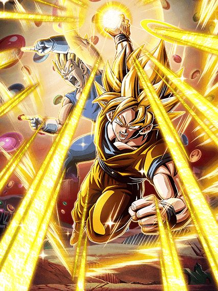

GOKU E VEGETA TAG / SUPER GOGETA
 + Super Saiyan Goku (Angel)")
Esse card é super similar ao Vegetto TEQ, onde o Vegeta fica no slot 2 e stacka ATK e o Goku stacka DEF no slot 1
A maior diferença entre os cards é que o Vegeta tem +300% de DEF e Defesa Ativa no começo da luta, o que é um pouco pior que a redução de dano que a base do Vegetto TEQ tem mas fazer oq né

O Goku tem 80% de chance de desvio e Defesa Ativa no slot 1, o que é melhor que a redução de dano pura sem nenhum stack, mas também faz dele um pouco "desvia-ou-morre" se você der azar
A Active do Goku resulta no lendário Veku, impede o boss de atacar por 1 turno e no turno seguinte o Goku fica com desvio garantido, o que é bem quebrado
Mas nós sabemos oq realmente importa nesse card.

O card que não foi vazado nem nada xd
A Active Skill desse cara dá 54% de ATK e DEF pra todos aliados e deixa eles Super Efetivos por 1 turno, o que é absurdamente ridículo e faz ele parecer um card fan made
Tirando isso, ele ainda tem rainbow orb change, Defesa Ativa, 2 Ultra SAs adicionais, possíveis 80% de redução de dano, crítico garantido, e a lista vai indo..
Além de tudo isso, ele é imune à debuffs e tem as animações e OSTs mais geniais já feitas, é simplesmente peak.
Bills AGL

Oq o bro está fazendo aqui? 😭
Esse cara dá Ki e 50% de ATK e DEF pra nova categoria Successors, além de também mudar orbs pra rainbow gratuitamente
Ele tem 50% de chance de desvio e por 7 turnos tem Defesa Ativa e lança um adicional com 50% de chance de ser SA
Ele até stacka 20% de ATK e DEF no SA e consegue dar um dano bem "ok" dependendo do quão alto estiver o HP do boss, mas é melhor só focar no suporte mesmo
GOHAN SSJ2 CARNIVAL
")
Bem vindo de volta, Gohan AGL.
O Gohan é um personagem de dano puro e tem animações e OSTs simplesmente incríveis
Ele precisa atacar 8 vezes pra buildar a passiva toda, e adivinha? ELE TEM ADICIONAIS PRA ISSO
A grande mecânica dele é ganhar um aumento de ATK e DEF ridiculamente alto a partir do quinto turno dele, que é onde você pode usar a Active Skill que simplesmente destrói qualquer coisa
Junta isso com Defesa Ativa, um pouquinho de redução de dano e DEF multiplicativa e você cozinha.
Goku e Freeza Carnival
 (Angel) + Goku")
O lado Freeza desse card é meio que incompetente, tendo um total de ZERO mecânicas defensivas caso ele não esteja abaixo de 77% de HP
Ele também precisa que especificamente a rotação seja inteira Super Class ou Extreme Class pra ter buffs importantes como SAs adicionais e crítico garantido
Ele até dá 77% de ATK e DEF pra Representatives of Universe 7 e Battle of Fate no começo da luta, mas não ajuda se ele em si é muito frágil
 (Angel)")
O Goku é muito mais normal, tendo Defesa Ativa, 59% de redução de dano pegando uma rainbow orb, stacka 50% de ATK no SA..
Na Active dele, ele cura 77% de HP, e na Active do Freeza eles fazem a finalização do torneio do poder e estouram o boss
Em geral, só não existem motivos pra trocar pro lado Freeza depois que o Goku chega na luta, só pra usar a Active mesmo
Acho q erros foram cometidos com os personagens do torneio do poder 💀